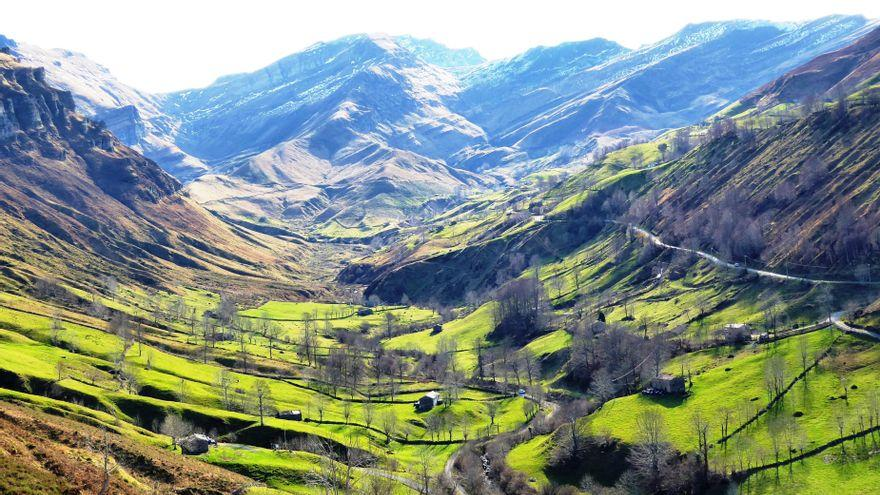
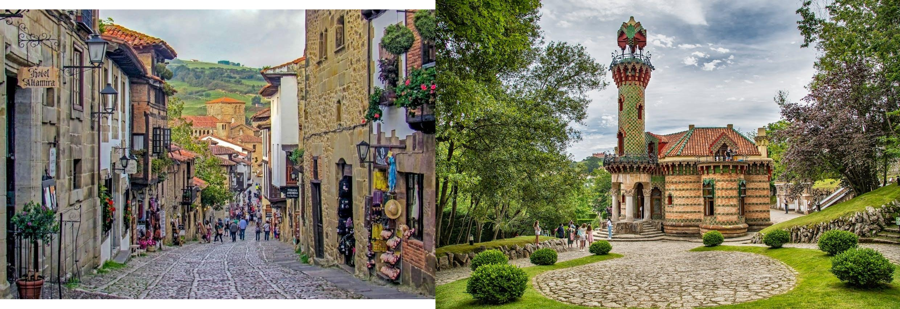

En el propio pueblo
Selaya
Descubre el ambiente local, sus comercios y la tradición de los sobaos y las quesadas pasiegas.
Abrir en Google Maps →
Desde Selaya
Pueblos con encanto, naturaleza, gastronomía y algunos de los lugares más conocidos de Cantabria a menos de una hora.
Muy cerca
Descubre el ambiente local, sus comercios y la tradición de los sobaos y las quesadas pasiegas.
Abrir en Google Maps →
Una de las mejores panorámicas para comprender el paisaje y la forma de vida de los Valles Pasiegos.
Abrir en Google Maps →Excursiones de medio día

Arquitectura tradicional, paseo junto al río y uno de los conjuntos históricos con más encanto de Cantabria.
Abrir en Google Maps →
Paisaje de montaña, arquitectura pasiega y una ruta perfecta para conocer el corazón de la comarca.
Abrir en Google Maps →
Carreteras panorámicas, cabañas pasiegas, praderas y montañas para descubrir uno de los valles más auténticos de Cantabria.
Abrir en Google Maps →Excursiones de día completo

Una visita ideal para pasar el día en familia, con animales en grandes espacios y un paisaje singular.
Abrir en Google Maps →
Playas, paseo marítimo, gastronomía, Centro Botín y la península de la Magdalena.
Abrir en Google Maps →
Dos de las villas más emblemáticas de Cantabria en una misma excursión: historia medieval, Altamira, arquitectura modernista y el Capricho de Gaudí.